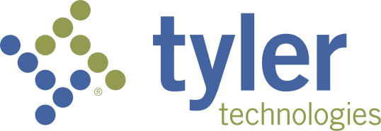
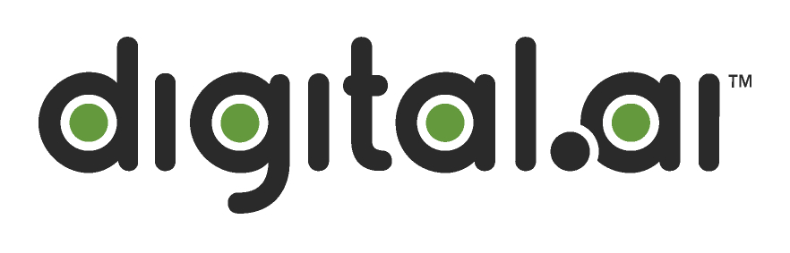

History
Dynamic and Autonomous Robotic Systems (DARos) Lab
Graduate Research Assistant
Joined the DARos Lab.
The team is currently developing a robotic guide dog designed for providing navigational assistance for the visually impaired.
I'm responsible for the vision component of the dog which involves being able to understand vehicles, pedestrians, traffic lights, crosswalks, walk signs, tactile pavings, etc.
This then integrates with path-planning and language system in order to make a full conversational assistant for a user!
We recently had a demo testing various features out, you can check it out here!
Our work was accepted at the CVPR 2025 AVA workshop
Currently working on incorporating neuromorphic devices such as event cameras into the vision pipeline for low-latency and low-power consumption. We're aiming to build a complete foundational model for event-based vision for assistive robotics!
University of Massachusetts Amherst
M.Sc -> Ph.D : Artificial Intelligence
Currently in my 2nd year working towards my Research Masters Degree specializing in A.I.
Teaching: I am a Teaching Assistant/Course Grader for CS 485 - Applications of Natural Language Processing for 40+ senior undergrads.
Research and coursework I am involved in focus on application based artificial intelligence and their subsections with robotics and neuroscience.
Some of the courses and research areas I have taken/ am studying/ am interested in include:
Neuromorph Engineering
Bio-inspired Neuromechanics
Cognitive Neuroscience
Cognitive Psychology
A.I. and Robotics
Advanced NLP
Advanced Computer Vision
Reinforcement Learning
Apart from this, Some of the clubs I'm currently involved with are:
Neuroscience Club
Robotics Club
Chess Club
Boxing Club

DeepLearning.AI
Certification of Specialization : Deep Learning
Completed the Deep Learning Specialization while on a sabbatical before beginning Grad School.
Went back home after 7 years and visited old friends and family.

Tyler Technologies Inc. - NIC Division
Software Developer - Research & Development
Transitioned to a more senior role where I lead research for emerging technology and lead integrations for legacy products into current infrastructures.
Facilitating the alignment of new research efforts with existing clients' objectives was a new challenge but a fun one.
I supervised & mentored new developers and also actively participated in research conferences, workshops, and seminars on behalf of the company.

US eDirect Inc.
Software Developer - Research and Development
I worked as software developer in the research and development team of a private NYC tech firm.
My role was a jack-of-all-trades ranging from Back-end and Front-end development, Database modelling, Cloud architecture, Vision and ML development and Security.
My work there, especially during the COVID crisis, eventually got the firm acquired by a S&P 500 company!
Here's an example and an article of the resulting acquisition.

Digital.AI
Software Engineering Intern
I did an internship in the Silicon Valley at an AI startup (now gone public).
It was my first exposure to the industrial side of tech and A.I., especially the fast-paced nature of it.
I got introduced to prediction estimates using ML and gave a demo of it which helped the company save 3 months of bug work!
University of Massachusetts Amherst
B.Sc. Honors : Computer Science
B.Sc. with Honors at the University of Massachusetts Amherst with a major in Computer Science and a minor in Math. I completed my Honors Thesis under the supervsion of TreaAndrea M. Russworm on the impact artificial intelligence in sports video games can have on athletes.
Some of the clubs I was involved with include:
Men's Club Soccer
Brazilian Jiu-jitsu Club
Students for Alternative Music and Technology
Theatre & Improv club
I was also a Resident Assistant where I supervised dormitories of upto 150 Freshmen from 2017-2019!